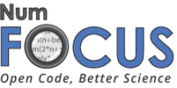

For the proceedings of the 2015 meeting, click here!
Python in Astronomy 2016
21-25 March 2016, University of Washington, Seattle
About
The second Python in Astronomy conference will be held from 21-25 March 2016 at the University of Washington eScience Institute in Seattle, WA, USA.
Similarly to the 2015 meeting (which was held at the Lorentz Center), we are aiming to bring together researchers, Python developers, users, and educators. The conference will include presentations, tutorials, unconference sessions, and coding sprints. In addition to sharing information about state-of-the art Python Astronomy packages, the workshop will focus on improving interoperability between astronomical Python packages, providing training for new open-source contributors, and developing educational materials for Python in Astronomy. The meeting is therefore not only aimed at current developers, but also users and educators who are interested in being involved in these efforts.
Banquet
The conference banquet will be held at Ivar's Salmon House. More details to come.
Lodging
Information for hotel reservations and discounted rates are here. Rooms must be booked before February 18, 2016 to guarantee the special rate.
Getting Here
The conference will be held in the eScience Institute, which is on the 6th floor of the Physics and Astronomy Tower (PAT) at the University of Washington. View Maps and Directions. The street address is 3910 15th Ave NE, Seattle, WA 98195.
From SEATAC airport you can catch the Link Light Rail to the University of Washington station, and connect there with the complementary hotel shuttle. (Note that the link light rail currently terminates in downtown Seattle, but the new extension all the way to the university will be active as of March 19). See also the King County Metro website for planning your route.
Details
During the workshop, we require participants to follow the code of conduct for the workshop which can be found here. If you have any questions about the workshop, you can reach the SOC at python-in-astronomy-soc@gmail.com
The workshop is hosted by the University of Washington eScience Institute, whose mission is to engage researchers across disciplines in developing and applying advanced computational methods and tools to real world problems in data-intensive discovery.
The hashtag for this meeting is #pyastro16
This workshop is kindly sponsored by:
|  |